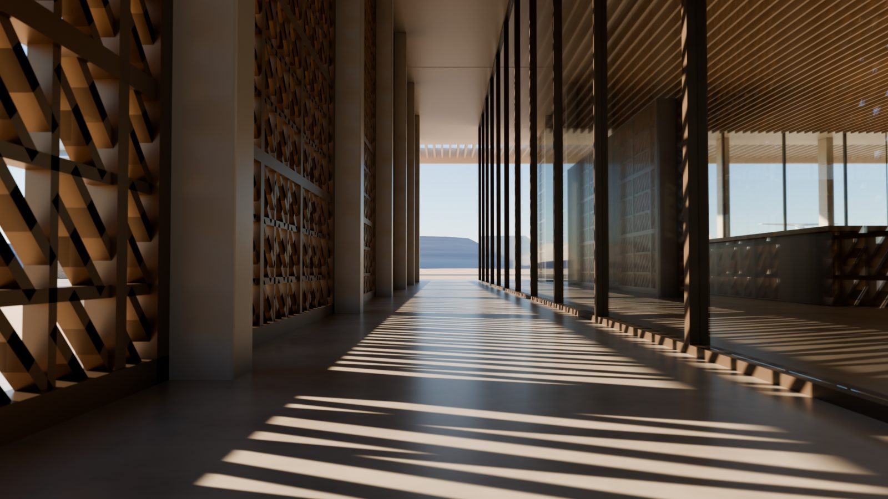
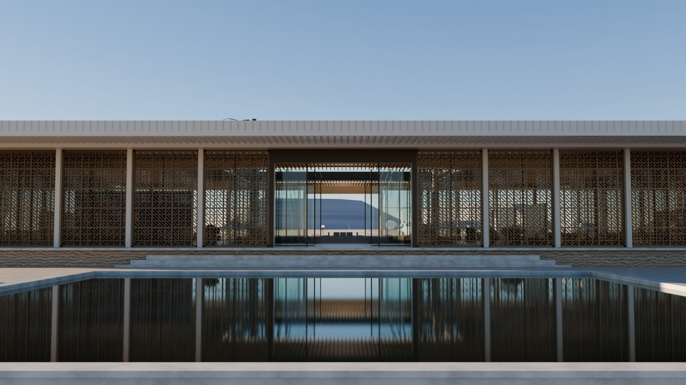
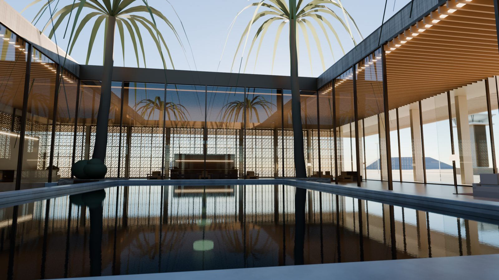
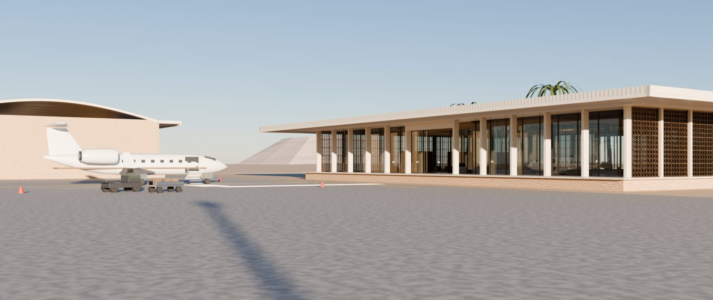
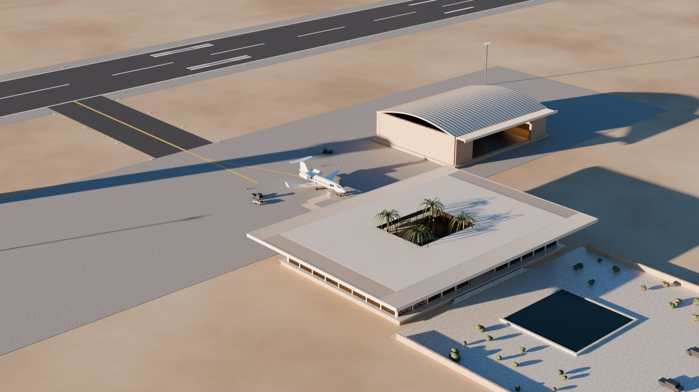
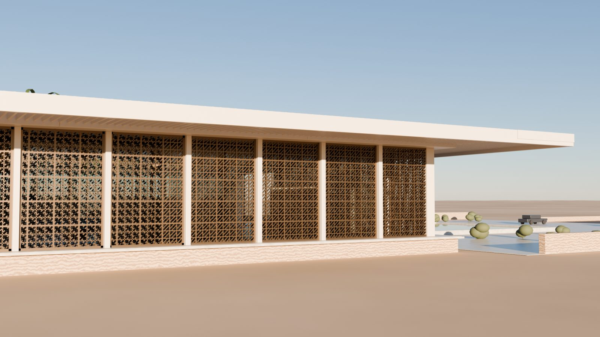

I support the day-to-day side of construction projects: scheduling, cost tracking,
suppliers and site records. Five years of experience across 15 or more projects, alongside an
MSc in Project Management. Based in Liverpool. Fluent in English, French and Arabic.
Coursera✦Google✦HubSpot Academy✦M2C Maroc✦ONCF✦Driscoll's✦Huddersfield Town AFC✦Liverpool John Moores University✦University of Huddersfield✦Huddersfield Students' Union✦Coursera✦Google✦HubSpot Academy✦
About
How I got here
I'm an international student from Morocco, now based in
Liverpool. Alongside my studies I have spent five years working on real construction projects.
I work hard and I am careful with detail.
I grew up around my family's construction supply business, M2C Maroc, and I have been part of
it since 2020. Most of my work there is the practical side: chasing suppliers, checking
deliveries arrive on time, and keeping cost logs accurate. It taught me that projects usually
do not fail from one big mistake. They fail because several small things slip at once.
That is why I am doing an MSc in Project Management at Liverpool John Moores University, which
includes PRINCE2. My dissertation is about how AI is being used in construction. For the
research I have been speaking to people at other companies about which tools they use and
whether they help.
Outside of my course I was president of the Moroccan Global Society at
Huddersfield for two years. I ran events for over 100 students and rebuilt the society's social
media, which won the Social Media Award. The work was similar to a project: plan it, organise
the people, and adjust when things change.
At a glance
LocationLiverpool, UK · will relocate
Right to workUK (visa held)
Open toProject or business management
StudyingMSc PM · PRINCE2
LanguagesEN · FR · AR (fluent)
StatusOpen to opportunities
Experience
Where I have worked
Roles across construction operations, a site placement with the national rail operator, student leadership and office admin.
Operations Management & Project Support
Apr 2020 to Present
M2C Maroc / Morocco
Coordinate planning and scheduling across 15 or more construction and maintenance projects (usually MAD 100,000 to 500,000, about £8,000 to £40,000), tracking progress against milestones from start to handover.
Track cost and material spend against budget on 2 to 5 projects at a time, flagging differences early so decisions use current figures rather than estimates.
Manage a supplier base of over 20, coordinating orders and sorting out supply issues before they affect the schedule.
Keep cost logs, project records and site documentation in Excel, and pull supplier and site data into regular progress and cost summaries for the business owner.
Started using AI and digital tools for routine reporting and document work, which cut the time spent on admin.
Job Shadowing, Construction Project Manager
Summer 2025
ONCF, Office National des Chemins de Fer / Rabat, Morocco
Arranged a short volunteer placement to shadow a project manager on ONCF's rail programme in Rabat, part of the preparation work around the planned 3.3 km rail tunnel under the Bou Regreg river linking Rabat Agdal and Sale stations, one of the upgrades ahead of the 2030 World Cup.
Followed the project manager through normal working weeks: early site walks, progress meetings with the contractors and the engineer, and the reporting that came out of them.
Saw how a large public infrastructure job is run day to day, how the master programme is broken into activities, how a slip on one activity is worked through with the contractor, and how progress and cost are reported up to the client.
Watched how site instructions, requests for information and design queries are logged and chased so nothing is lost between the client, the designer and the contractor.
Came away clear that most of the role is steady communication and spotting problems early, and that good written records are what keep everyone to the same version of events. Asked the team which digital and AI tools they use for planning and progress tracking, which fed into my dissertation research.
President, Moroccan Global Society
Sep 2023 to Jun 2025
University of Huddersfield Students' Union / UK
Elected president of a society of over 100 members, leading a committee and a full programme of events across the academic year. Planned schedules, assigned tasks and tracked delivery to deadline.
Managed the society budget, tracked spend against the allocation and reported activity to the Students' Union.
Grew attendance with a planned content and communications approach, keeping turnout steady through the year.
Won Best Global Society and the Social Media Award, against larger and more established societies.
Student Course Representative
Sep 2021 to Jun 2022
University of Huddersfield ISC / UK
Chosen to represent 40 students on the Business, Management and Law foundation year, acting as the link between students and staff.
Collected feedback across the cohort, identified the issues that came up most often, and raised them with tutors and course leaders in staff meetings.
Followed each issue through to a resolution and reported back to the group.
Administrative Assistant
Feb 2019 to Aug 2019
STE Wild Five Nine SARL / Morocco
Provided administrative and coordination support to the manager across daily office operations for a transport business.
Maintained invoices, delivery documentation and client records, checking figures and details for accuracy before filing.
Used Microsoft Excel and Office daily to log operational data, track deliveries and produce records for the manager.
Handled calls and emails with clients, drivers and suppliers, following up on outstanding items and managing several tasks against daily and weekly deadlines.
Projects
Projects
Specific pieces of work I planned and saw through.
Leadership
Society Annual Events Programme
University of Huddersfield · 2023 to 2025
Planned and delivered a full calendar of events across the academic year for a society of over
100 members. Managed timelines, a small team, logistics and venue bookings, and tracked the
budget. Each event had a clear goal, a deadline and a short review afterwards.
Operations
Cost & Supplier Control, M2C Projects
M2C Maroc · 2020 to Present
Run cost tracking and supplier coordination across 15 or more construction projects, each
worth about MAD 100,000 to 500,000. Keep budget and actual cost logs on 2 to 5 jobs at a time,
flag differences early, manage over 20 suppliers, and pull site data into regular progress and
cost summaries for the owner.
Marketing
Society Social Media Rebrand
University of Huddersfield · 2023
Rebuilt the society's social media from the ground up. Set a content schedule, posted
consistently, tracked engagement and adjusted based on what worked. The society won the Social
Media Award that year.
Strategy
Huddersfield Town Attendance Project
University of Huddersfield with Huddersfield Town AFC · 2023 to 2024
A university partnership with Huddersfield Town AFC. I was picked for a small student team
asked to put together a marketing strategy for the club's low midweek attendances. We looked
at why weekday games drew smaller crowds, worked up ideas to improve turnout, and presented
them to the club.
Academic
Project Risk Management Simulation
MSc Project Management, LJMU · 2025
Team simulation where we managed a project through a series of risk events. Built a risk
register, scored each risk by likelihood and impact, and decided how to respond as the
situation changed. Good practice for working through problems in a structured way.
Academic
Market Entry Study: OCP
University of Huddersfield · 2022 to 2023
Individual research project on the case for a large overseas company relocating to the UK. I
chose OCP, Morocco's state phosphate producer and one of the biggest phosphate exporters in
the world, and set out the arguments for and against a UK move, covering its trade position,
supply chains and the main drawbacks. Graded the top mark in the module.
Operations
Berry Packing and Labelling, Driscoll's
Driscoll's grower site, Morocco · Jun 2019
Volunteered for a few weeks at a Driscoll's berry operation in Morocco before moving to the
UK. Worked on the packing and labelling line, preparing fruit for export. The same produce is
sold in UK supermarkets including Lidl, so it was a close look at how an export supply chain
runs at the packing end.
Dissertation, in progress
Research into AI in Construction
MSc Project Management, LJMU · 2025 to 2026
My dissertation looks at how construction and infrastructure companies are starting to use AI
in planning, scheduling, cost control and site monitoring, and what that changes for the people
running projects.
For the research I am speaking to people who work at contractors, consultancies and client
organisations about which tools they actually use and whether they help. Finishing in 2026.
Education
Education
MSc Project Management
Liverpool John Moores University, UK. Includes PRINCE2, studied and examined as part of the course.
2025 to PresentPredicted First Class
BA (Hons) Business Management
University of Huddersfield, UK · operations, finance, strategy & business analysis
2022 to 20252:1 Honours
Business, Management & Law
University of Huddersfield, UK · Foundation Year
2021 to 2022First-Class
Baccalaureate, Economics
Morocco. Economics, accounting, finance, business organisation and mathematics.
2018 to 2020
Certifications
SIA Door Supervisor Licence
Security Industry Authority. Includes conflict management, physical intervention and licensing law.
Current
Emergency First Aid at Work (EFAW)
Qualsafe Level 3 Award (RQF), with Management of Catastrophic Bleeding
2026 to 2029
PRINCE2 Foundation
Studied and examined, MSc module (LJMU)
2025
Google Project Management
Professional Certificate · Coursera
2025
Google Data Analytics
Professional Certificate · Coursera
2025
Fundamentals of Digital Marketing
Google
Jun 2025
Inbound Marketing
HubSpot Academy
2025 to 2027
Skills
Skills
From my Business Management degree, my MSc in Project Management, and five years of work.
Attention to DetailOrganisation & PrioritisationMeeting DeadlinesProblem SolvingAdaptabilityWorking Independently & in a TeamWorking Under PressureHealth & Safety AwarenessFirst Aid Trained (EFAW)SIA Licensed
Marketing
Marketing StrategyContent & Social MediaDigital MarketingInbound Marketing
Languages
English Fluent
French Fluent
Arabic Fluent
Currently
Keeping my skills current
The way projects are run is shifting towards AI and better tooling. I try to stay close to that
rather than catch up with it later.
Using
AI as part of how I work
I use AI tools regularly for everyday project tasks like drafting and summarising, and I pay
attention to where they genuinely help and where they do not. It is a fast-moving area and I
want to be comfortable with it, not behind on it.
Getting familiar
Power BI and Microsoft Project
Building my familiarity with the reporting and scheduling tools used on larger programmes, so
the software side is not a learning curve on day one.
Following
Where the field is heading
I keep up with how construction and project teams are adopting new tools and ways of working,
so I can talk about it sensibly in an interview or on the job.
Toolbox
Small tools I built to do the job faster
Most of project management is the same handful of calculations done under time pressure in a
spreadsheet that someone else set up. When I hit one of those often enough, I build a proper
tool for it. These run in the browser, work offline, and keep your numbers on your own machine.
Take-off calculator — pour dimensions in, volumes, waste, loads and cost out.
Programme and float — tasks and dependencies in, critical path and Gantt out.
Risk contingency — Monte Carlo over the risk register for a P50 and P80 figure.
Workshop
What I build in my own time
I learn software by giving myself a real brief and finishing it. Tutorials never stick the same
way. This is the most recent one, and it taught me more about light, geometry and patience than
a course would have.
12s flythrough
Blender · Python
Dar al-Rīḥ, a small desert airport
Personal project · Blender · 2026
A private terminal out in the Moroccan pre-Sahara. The plan takes a riad and turns it
inside out for aviation: a courtyard at the heart, a bronze lattice screen on the sunny
side, and the whole airside face left open to the apron.
None of it is modelled by hand. The entire aerodrome is written in Python, so a bay width,
a material or the hour of the afternoon is just a number I change, and the scene rebuilds in
about three seconds.
202,000 faces, 358 objects, nothing downloaded
Path traced in Cycles on the GPU
Sun angle and exposure worked out by measuring the scene
Terminal, tower, hangar, aircraft, runway and landscape all scripted

Late sun in the west gallery

Arrival across the water

The courtyard

Airside, from the apron

The whole site

The lattice, close up
Blender · Python
A metro tunnel, built the way one gets built
Personal project · Blender · 2026
A single-track bored tunnel and the train inside it. I set it out
to real dimensions: a 6.2 metre bore, 300 mm precast segments in
1.6 metre rings, seven segments and a key, staggered ring to ring
the way a tunnel boring machine actually erects them.
The interesting part was making every system have a reason to be
there. The drainage runs to a channel that goes somewhere. The
cables sit in ladder tray on brackets bolted to the lining. The
fire main has flanges, supports and a landing valve at the cross
passage. Nothing is decoration.
Slab track, 60E1 rail, fastenings every 650 mm
Overhead conductor rail, not catenary, because the bore is tight
Signals, balises, axle counters, earthing and bonding
I am looking for graduate or early-career roles in project management or business management,
in any sector. I have the right to work in the UK. If this looks like a fit, please get in touch.

 Google
Google HubSpot Academy
HubSpot Academy